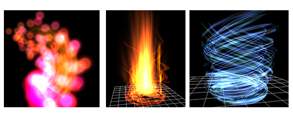
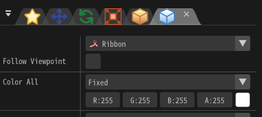

渲染 - 丝带¶
概述¶
这里我们解释在渲染设置窗口中选择了“丝带”时，影响渲染的参数。
在选择了“丝带”时，特效沿着一个连续的丝带渲染。
丝带并不将每个粒子分开绘制。而是将一个粒子的所有子粒子连接起来形成一个路径。例如，如果粒子1、2、3都是粒子0的子粒子，一个像丝带的形状将会在粒子1、2、3之间绘制。这个丝带是通过将每个粒子的(-0.5, 0, 0)和(0.5, 0, 0)连线形成的。

Parameters¶

“渲染设置”窗口
UV类型¶
它设置了UV重复的图案。
拉伸¶
整个丝带使用一张图片。适用于拉长的的粒子，例如激光。
瓦片¶
它在丝带中重复一张图片。它适用于有重复图案的粒子，例如链条。 还可以设置为不只重复边缘，而是在设置的循环区域内重复。
跟随视点¶
丝带的形状是一条连接以粒子为中心的两个点(-0.5, 0, 0)和(0.5, 0, 0)的粗线。 通常情况下，连接这两点的线的方向取决于粒子的旋转，但是你可以设置它是否应该旋转到指向观点的方向。


整体颜色¶
设置丝带的整体的颜色。
顶点颜色¶
设置丝带的每个顶点（拐角）的颜色。
顶点坐标¶
设置丝带的每个顶点的坐标。此处只可设置X坐标。